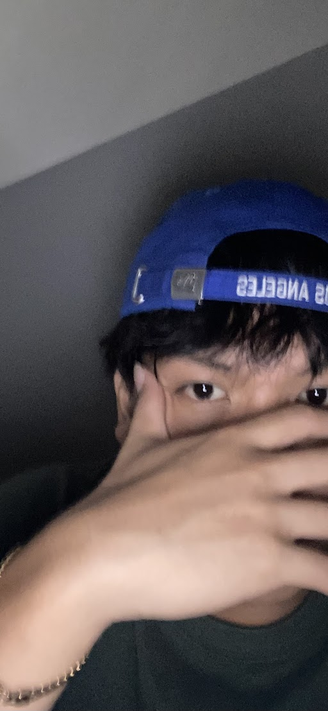

Services
I specialize in creating clean, minimal web layouts that prioritize the user's experience. My service include Sematic HTML structuring, accesibility for all viewers. By maintaining a proportional and balance design, I ensure thast information stands out without overwhelming the eyes during the viewing process.